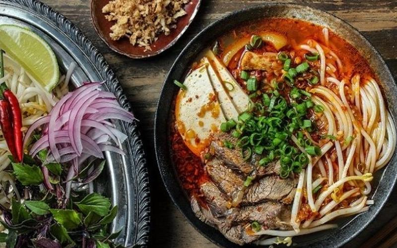

Home
Bun Bo

Description
Here's a classic Vietnamese Bún Bò Huế recipe — a flavorful,
spicy beef noodle soup from the city of Huế. It's not as sweet as phở and has a bold, lemongrass-infused broth.
Ingredients
- 1 kg beef shank or brisket
- 500 g pork hock or pork leg (optional)
- 3 stalks lemongrass (smashed and tied)
- 1 large onion (charred)
- 1 small piece of ginger (charred)
Steps
- Prepare the broth
- Season the broth
- Make chili oil
- Cook noodles
- Assemble bowls
More recipes